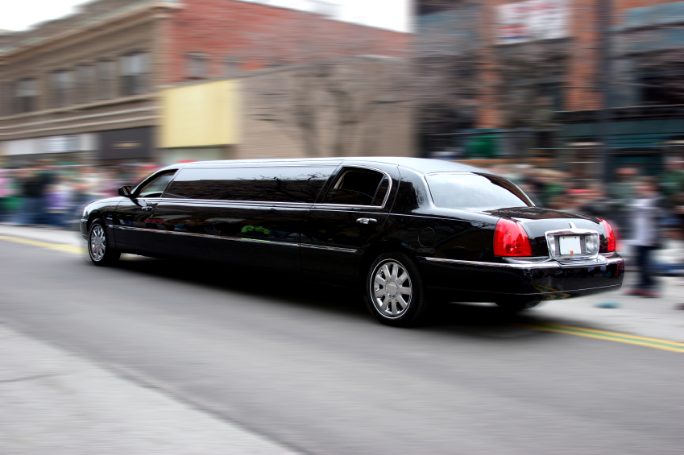

Stretch Angebot
Bei Bock auf Limo ist das ein erstklassiger und ausgewählter Service, mit dem wir Ihnen eine unserer luxuriösen Limousinen, wahlweise mit und ohne Chauffeur, zur Verfügung stellen. Hier finden die Kunden Stretchlimousinen von Chrysler, Hummer und Lincoln, sowie Limousinen der deutschen Marke Mercedes. Zu den Stretchlimousinen gehört immer auch der Chauffeur.
Bock auf Limo Ausstatung
Den großzügigen Luxus, den wir in unseren Stretchlimousinen sowie in allen anderen Fahrzeugen bieten, haben wir aus unserer Geschäftstätigkeit in den USA übernommen. Dort wurde von uns ein Limousinenservice in Hollywood, dem bekannten Stadtteil von LA im US-Bundesstaat Kalifornien, unterhalten. Unsere Kunden und Fahrgäste waren buchstäblich verwöhnt, kein Luxus war ihnen fremd. Als wir Anfang der 2010er Jahre unseren Limousinenservice hier in der Schweiz eingeführt haben, war es für uns eine Selbstverständlichkeit, am Luxus und Komfort keine Abstriche zu machen. Beides kommt bei unseren Kunden bestens an, wie uns immer wieder bestätigt wird. Zum Standardluxus bei Lincoln, Chrysler und Hummer gehören eine große und gut bestückte Bordbar, bequemste Ledersitze, Klimaanlage mit Touch-Display, zwei TV-Bildschirme sowie Lademöglichkeiten für Handy, Laptop, Tablet und andere Geräte. Für eine besondere Musikqualität in den geräumigen Fahrzeugen sorgen Subwoofer und Verstärker. Ob Firmen-, Familienfeier oder Businessfahrt; für jeden Fahrgast bieten unsere Stretchlimousinen das passende Ambiente und Flair.
Bock auf Limo Team
Zu unserem Firmencredo gehört es, nur mit Eigenem zu arbeiten. Jede unserer Limousinen ist auf unseren Limousinenservice zugelassen, und alle Chauffeure sind bei Bockk auf Limo in der Schweiz angestellt. Wir arbeiten weder mit Fremdfahrzeugen noch mit Fremdpersonal. Unser Team ist ausgesucht, auf seine Integrität hin gecheckt, motiviert und geschult. Ein regelmäßiges Fahr- und Sicherheitstraining ist selbstverständlich. Unsere Chauffeure sind durchweg mehrsprachig und in den Kantonen des Landes ortskundig. Diskretion ist bei unserem Limousinenservice das oberste Gebot, ebenso wie ein dezent-zurückhaltender Umgang mit unseren Fahrgästen.
Für jeden Anlass
Ob eine Tagestour mit der Gruppe durch die Schweizer Alpen, ob ein Familienfest in einem landschaftlich abseits gelegenen Mehrsternehotel, oder ob eine zünftige Firmenfeier mit Chef und Mitarbeitern bis hin zum Azubi; wir können mit unserem Limousinenservice das jeweils passende Fahrzeug nebst Chauffeur bereitstellen. Dieser Service hat sicherlich seinen Preis, wobei das Preis-Leistungs-Verhältnis ausgewogen und stimmig ist. Luxus kostet Geld, und zunehmend mehr Kunden möchten sich mindestens einmal für einen Tag diesen Rundumluxus leisten. Jeder kann einen dreistelligen Betrag in Euro oder in Schweizer Franken für einen Limousinenservice erübrigen, wenn er es denn möchte.
Wir planen gemeinsam mit Ihnen den Limousinenservice
Viele unserer Kunden haben eine vage Idee, aber noch keine konkrete Vorstellung, was der Limousine Kunde alles erhält. Mit ihnen gemeinsam überlegen wir, wie unser Limousinenservice am besten zu dem jeweiligen Event passt. Sie wollen etwas Außergewöhnliches, was wir ihnen bieten können. Bei unserer Auswahl an Limousinen ist für jeden etwas dabei. Unser Kundenservice 24/7 bedeutet 24h täglich, also rund um die Uhr an sieben Tagen in der Woche. Zu jeder Fahrt gehören eine Flasche Prosecco/Moscato, Erfrischungsgetränke sowie mehrere Mineralwässer. Wir betrachten uns als das führende Stretchlimousinen-Unternehmen in der Zentralschweiz. Unser landesweites Einsatzgebiet reicht von A wie Aargau bis Z wie Zug oder Zürich. Sie können uns zum Anmieten einer unserer Limousinen von überall her im Lande ansprechen.
Events
Flughafen Transfer
Tagesausflüge
Hochzeiten
Party-Limo
Polterabend
Transfer allgemein
Specials
Kutschenfahrten
Grossanlässe mit mehreren Limousinen
Transfer für Gäste und Touristen